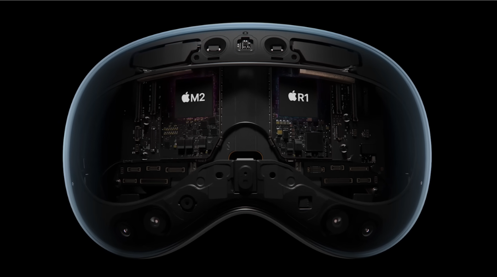
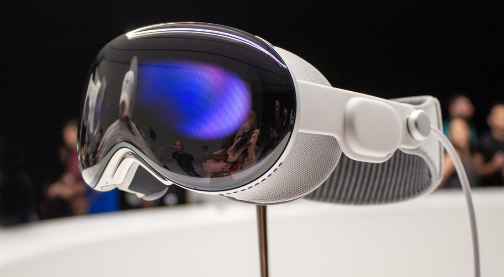
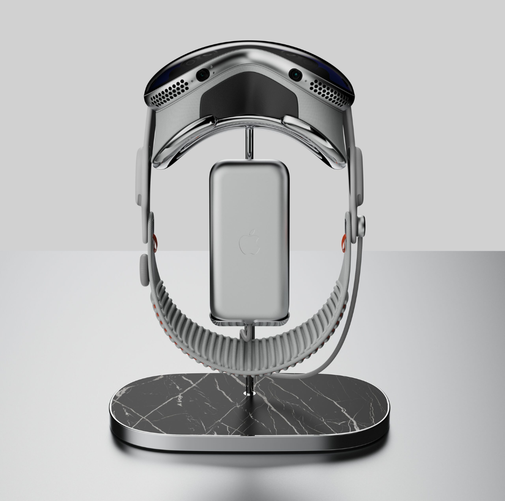

Specifiche Tecniche
Scopri in dettaglio la tecnologia rivoluzionaria di Apple Vision Pro.

Display
- Tecnologia: Sistema display Micro-OLED
- Pixel: 23 milioni di pixel
- Risoluzione (stimata): Oltre 4K per occhio
- Gamma Cromatica: Ampia gamma cromatica P3 (92%)
- Refresh Rate: 90Hz, 96Hz, 100Hz
- Riproduzione Video: Supporto per 24fps e 30fps senza judder

Chip
- Chip Principale: Apple M2
- CPU 8-core (4 performance, 4 efficiency)
- GPU 10-core
- Neural Engine 16-core
- Memoria Unificata: 16GB
- Chip Dedicato: Apple R1
- Elabora input da 12 camere, 5 sensori e 6 microfoni
- Latenza fotoni-movimento: 12 millisecondi
Sensori e Camere
Camere Principali
Due camere principali ad alta risoluzione
Camere di Tracciamento
Sei camere per il tracciamento del mondo esterno (verso l'esterno)
Quattro camere per il tracciamento oculare (verso l'interno)
Altri Sensori
TrueDepth camera, LiDAR Scanner, Quattro unità di misura inerziale (IMU), Sensore di flickering, Sensore di luce ambientale

Audio
- Tecnologia: Audio Spaziale con tracciamento dinamico della testa
- Personalizzazione: Audio ray tracing personalizzato
- Sistema: Sistema audio a doppio driver per ciascun orecchio
- Microfoni: Array di sei microfoni con beamforming direzionale
- Latenza: Bassissima latenza audio
Input e Controllo
- Metodi Primari: Mani, Occhi, Voce (Siri)
- Accessori Supportati: Tastiere Bluetooth, Trackpad, Controller di gioco
- Optic ID: Autenticazione biometrica basata sull'iride
Connettività
- Wi-Fi: Wi-Fi 6E (802.11ax)
- Bluetooth: Bluetooth 5.3
- AirPlay: Fino a 720p per mirroring su dispositivi compatibili
Batteria
- Tipo: Batteria esterna ad alte prestazioni
- Autonomia: Fino a 2 ore di utilizzo generico
- Riproduzione Video: Fino a 2.5 ore
- Utilizzo: Possibilità di utilizzo mentre è in carica
Nella confezione
- Apple Vision Pro (con Light Seal e Light Seal Cushion)
- Solo Knit Band e Dual Loop Band
- Cover frontale
- Batteria
- Panno per la pulizia
- Alimentatore USB-C da 30W
- Cavo di ricarica USB-C (1,5 m)